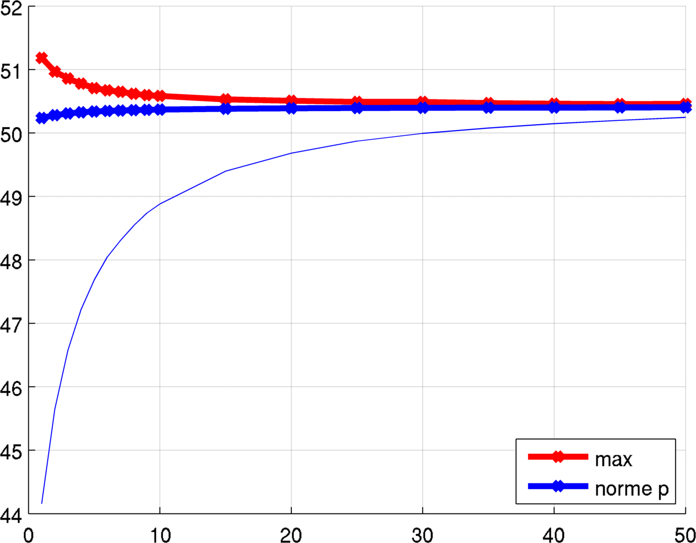

Partition which minimize the largest fundamental eigenvalue
In collaboration with Virginie Bonnaillie-Noel. You can see all the details in the following preprint.
We consider partitions of a two dimensional domain $D$ which minimize the functional $$ F((\omega_i))= \max_i \lambda_1(\omega_i)$$ where $\lambda_1(\omega)$ is the first eigenvalue of the Dirichlet-Laplace operator on $\omega$. Apart from some cases where we know that the optimal partition is associated to a nodal function, there is not much information we know about the structure of the optimal partition. We are thus motivated to perform some numerical simulations in order to find candidates for these minimal partitions. The numerical algorithm we use is inspired from the paper of Bourdin, Bucur and Oudet. I have other computations made using this algorithm in the case of the sum of the eigenvalues: check this link. The main idea is that instead of computing the eigenvalue of the shape $\omega$ we consider a function $\varphi$ which approximates the characteristic function $\chi_\omega$ and we solve the problem $$ -\Delta u +C(1-\varphi)u = \lambda u \text{ in }D$$ where $D$ is the bounding box or the computation domain and $C\gg 1$ is a penalization constant.
We know that the maximum of a family of regular functions is not necessarily smooth and thus trying to minimize the maximum directly does not lead to conclusive results. We take another approach suggested in a paper of Bonnaillie-Noel and Lena which is to minimize a $p$-norm for large $p$: $$ \left( \frac{\lambda_1(\omega_1)^p+...+\lambda_1(\omega_n)^p}{n}\right)^{1/p}.$$
Numerically we can go as high as $p=50$. What we expect is that the optimal candidate we obtain is an equipartition (i.e. the first eigenvalue of every cell is the same). Our candidates are almost equipartitions. In some cases, the results obtained with the relaxed formulation allow us to conjecture that the optimal partition has a certain particular configuration or some kind of symmetry. With these assumptions we are able to improve the relaxed results.
The numerical study of the partitions goes as follows:
- First we perform the numerical optimization with the relaxed formulation for $p \in \{1,2,3,...,50\}$.
- Then we extract the contours, by using, for example, Matlab's contour function.
- For each contour we construct a mesh and we compute the first eigenvalue using finite elements.
Below you can see some results. We have noted the following observations during our simulations:
- If we want to obtain good results with the penalized formulations we need to have a penalization constant $C$ as large as possible.
- In order to achieve this it is useful to consider the improvement of the algorithm of Bourdin, Bucur and Oudet using only points of the finite difference grid which are close to the cell whose eigenvalue we compute. More details can be seen here.
 |
 |
| The largest eigenvalue and the $p$-norm as a function of $p$ | The best candidate for partitioning the circle into $8$ parts |
Sometimes, if the partition has a particular structure we can express it as a nodal partition of a mixed spectral problem. In this way we may obtain better upper bounds for the maximal eigenvalue. See below some situations where this situations applies.
We may ask ourselves when is a partition which is a candidate for the max can also be a candidate for the sum. It turns out that this does not happen very often and we may give answers by looking at the evolutions of $p$-norms as $p$ grows or use a $L^2$-norm criterion.
← Back to numerical computations
Created: Apr 2016